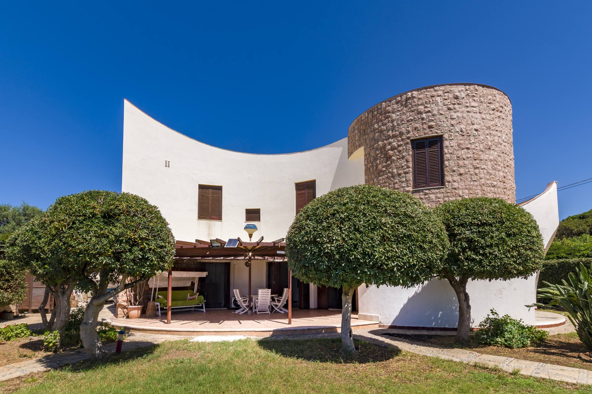

Villa fronte mare · Palermo, Sicilia
La Struttura
La Tilde Sunset Bay Villa è una villa esclusiva con accesso diretto al mare, immersa nella bellezza del litorale palermitano. Qui il tempo si dilata al ritmo delle onde e la luce della Sicilia tinge ogni tramonto di rosso e oro, regalando scenari di straordinaria bellezza dalla comodità della tua villa privata.
La struttura è stata progettata per offrire il massimo del comfort e della privacy, con ampie vetrate che incorniciano la baia, spazi aperti che si fondono con il paesaggio marino e interni curati nei minimi dettagli. La villa dispone di tutto il necessario per un soggiorno indimenticabile: dal salotto panoramico alla cucina attrezzata, dai bagni eleganti agli spazi outdoor affacciati sul mare.
Ideale per famiglie, gruppi di amici o coppie in cerca di un'esperienza di lusso autentica. La villa si trova in posizione strategica, a breve distanza da Palermo e dalle sue attrazioni culturali, pur mantenendo quella quiete e quella bellezza naturale che solo il mare siciliano sa offrire.
Cosa Troverai
Posizione
Recensioni Ospiti
"La villa fronte mare è semplicemente perfetta per una vacanza in famiglia. Giardino bellissimo, accesso diretto alla spiaggia, e un servizio impeccabile. I tramonti dalla terrazza sono indimenticabili."· Booking.com
"Un'esperienza da sogno. La cena con lo chef privato in villa è stato il momento più memorabile della nostra vacanza. Servizio concierge eccezionale, gestione perfetta."· Prenotazione diretta
"Villa spettacolare, a 5 minuti dall'aeroporto ma sembra di essere in paradiso. La baia privata è un lusso raro. Prenotando direttamente abbiamo risparmiato molto."· Prenotazione diretta
Prenota Direttamente
Prenota Direttamente
Verifica le date disponibili e prenota la tua villa fronte mare vicino Palermo direttamente sul nostro portale ufficiale.
Verifica disponibilità Chiedi su WhatsAppDomande Frequenti